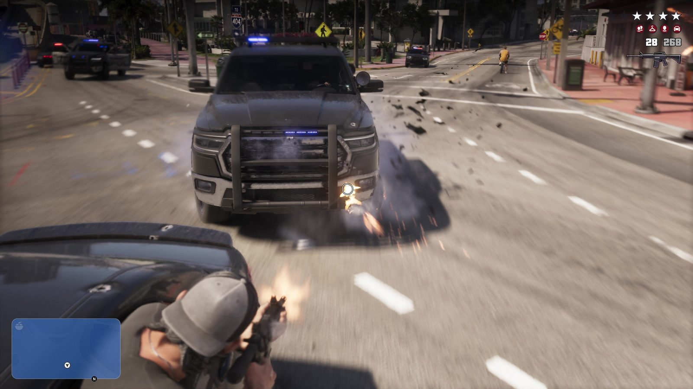
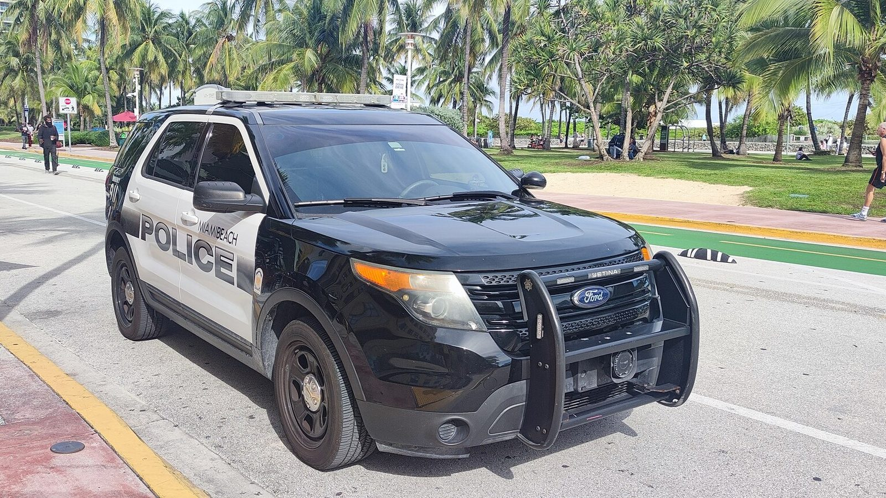
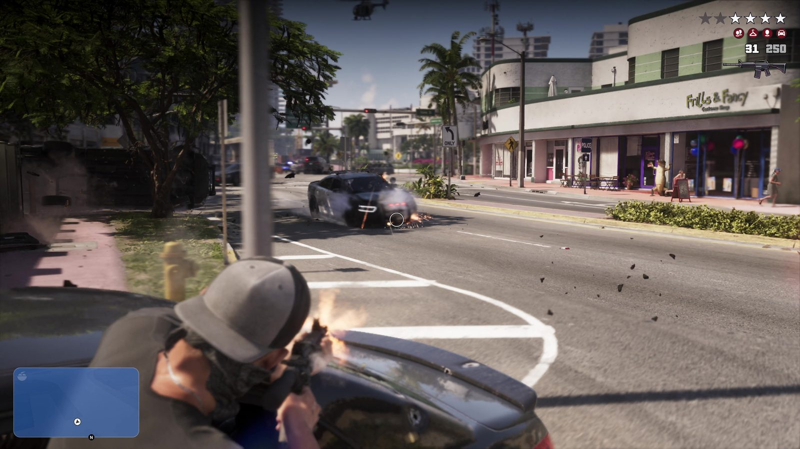
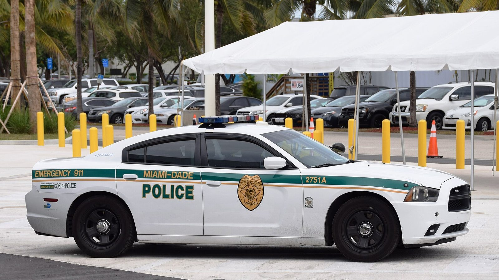

Полиция Вайс-Сити и полиция Майами
Опубликовано:
Большой внедорожник с кенгурятником и мигалкой на крыше — типичная полицейская машина Южной Флориды. Но марка, раскраска и название полиции в игре свои.


- В «Расширенном показе» (14:08) на героев посреди перестрелки мчится полицейский внедорожник: кенгурятник спереди, мигалка на крыше.
- По данным GTA BOOM, полиция города в игре — Vice City Police Department (VCPD): бело-синие машины и машины без яркой раскраски.
- У полиции Майами-Бич — чёрно-белые Ford Police Interceptor Utility, полицейская версия Ford Explorer.
- У соседнего округа Майами-Дейд машины белые с зелёной полосой и надписью «Emergency 911».
Что в игре
Эпизод ограбления из «Расширенного показа»: герои отстреливаются посреди улицы, а навстречу на скорости несётся тяжёлый полицейский внедорожник. Спереди — массивный кенгурятник, на крыше — мигалка. Следом подтягиваются другие машины полиции, одна из них в перестрелке врезается в столб.
Полиция в игре — своё ведомство. По данным GTA BOOM, это Vice City Police Department (VCPD): в трейлерах видны бело-синие машины, машины без яркой раскраски и внедорожники.

Что в реальности
У полиции Майами-Бич — чёрно-белые Ford Police Interceptor Utility. Это полицейская версия Ford Explorer: усиленная подвеска, мигалки, кенгурятник, которым можно оттолкнуть машину с дороги. Ford называет её самой продаваемой полицейской машиной в США.
В Южной Флориде у каждого ведомства своя раскраска. Машины округа Майами-Дейд — белые с зелёной полосой и надписью «Emergency 911», у дорожного патруля штата — свои цвета. Поэтому в одной погоне могут оказаться машины трёх разных полиций.

В 2018 году жители Флориды проголосовали за поправку к конституции штата: в каждом округе должен быть выборный шериф. Майами-Дейд был единственным округом без него. В январе 2025 года полиция округа Майами-Дейд стала офисом шерифа.
Совпадает и отличается
| Майами | GTA 6 | |
|---|---|---|
| Полицейский внедорожник | Ford Police Interceptor Utility | 🟡 Своя марка |
| Кенгурятник и мигалка на крыше | Да | 🟢 Да |
| Раскраска | Чёрно-белая, бело-зелёная | 🟡 Бело-синяя и без раскраски |
| Название | Полиция Майами-Бич, офис шерифа Майами-Дейд | 🟡 Vice City Police Department |
Источники: Rockstar Games — «Grand Theft Auto VI: An Extended Look», 14:08–14:20; GTA BOOM — Vice City Police Department; Ford — Police Interceptor Utility; Miami-Dade Sheriff’s Office (2025).
Реальные фото: Фото: Dickelbers, CC BY-SA 4.0 · Wikimedia Commons; Фото: Elbert Hampton, CC0 · Wikimedia Commons. Кадры игры: Rockstar Games.
Каждый день — одно сравнение: кадр игры рядом с реальным фото. Подписывайтесь:
YouTubeInstagramTikTok
 vs
vs
 vs
vs
 vs
vs